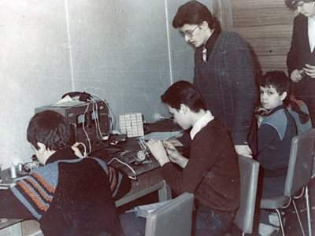
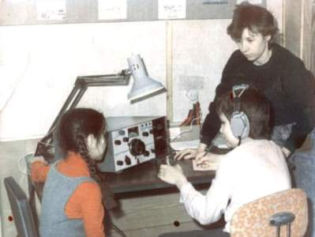

{kind=link}
Фото-летопись
Первые занятия по радиотелеграфии и радиоконструированию прошли в сентябре 1989 года


Первые операторы радиостанции Света и Владик под наблюдением Ивановой Е.В проводят радиосвязь.
История РЦДТ«Рател»
Региональная общественная организация «Радиолюбительский центр творчества и досуга «Рател» была создана на базе детского радикружка. Поддерживал и работу клуба Московский научно-исследовательский радиотехнический институт.
Первые занятия по радиотелеграфии и радиоконструированию прошли в сентябре 1989 года
С началом «перестройки» финансирование кружка прекратилось и организация перешла на самообеспечение. В 1991 году была зарегистрирована общественная организация (перегистрирована 10.09.96 г.) Уставными задачами общественной организации были создание условий для развития научно-технического творчества молодежи, ведение воспитательной и образовательной деятельности с детьми и подростками, организация групп по подготовке школьников к производственной деятельности. Первые годы существования члены организации брались за любую работу по радиотехнической тематике (разработка и изготовление охранных устройств, блоков питания, антирадаров).
С 1993 года было решено создать учебно-производственные мастерские по ремонту и обслуживанию бытовой техники и радиоаппаратуры. Работа учебно-производственных мастерских позволяет обеспечивать материально-техническую базу для проведения занятий и для организации рабочих мест для подростков , привитие им профессиональных навыков.
В рамках учебно-производственных мастерских проводится работа по ремонту и сервисному обслуживанию бытовой аппаратуры и радиотехники. Учащиеся знакомятся с принципами работы радиоэлектронной аппаратуры не на макетах и рисунках, не по учебникам и лекциям, а на самых современных образцах аппаратуры поступивших в мастерскую от населения и организаций. Полученные навыки помогают мальчишкам почувствовать себя настоящими мужчинами в семье - справляться со сложной бытовой техникой и аппаратурой. Раскрытие творческого потенциала детей, привитие им трудовых навыков поможет им в жизни.
За время существования организации обучение прошли более 300 человек -взрослых и детей. Выпускники приобрели необходимые навыки для дальнейшей профессиональной трудовой деятельности и удовлетворению радиолюбительских интересов, легко могут обращаться с аппаратурой, настроить и починить домашнюю технику.
Согласно Уставу Центр в рамках учебно-производственных мастерских, ведет спортивно-техническую работу на коллективной радиолюбительской радиостанции.
Радиостанция UZ3AZY выходила в эфир не только из центра Москвы, но и с островов Белого Моря. Члены команды обеспечивали связь экспедиции «Робинзонада ».
Кружковцы принимали участие в выставках Научно Технического Творчества молодежи и конференциях Радио-Поиск; в фестивале «Нить Времен» профессиональных конкурсах, летних экспедициях и «Полевых днях».
Любительская радиостанция RK3AZY готовит юных радиолюбителей для работы в эфире на КВ и УКВ диапазонах. Работа коллективной радиолюбительской станции участвовали в соревнованиях по радиоспорту «Белое озеро». По инициативе Радиолюбительского Центра «Рател» и журнала «Радио» был проведен Первый Молодежный слет радиолюбителей Москвы и Подмосковья «Апрелевка 2006».